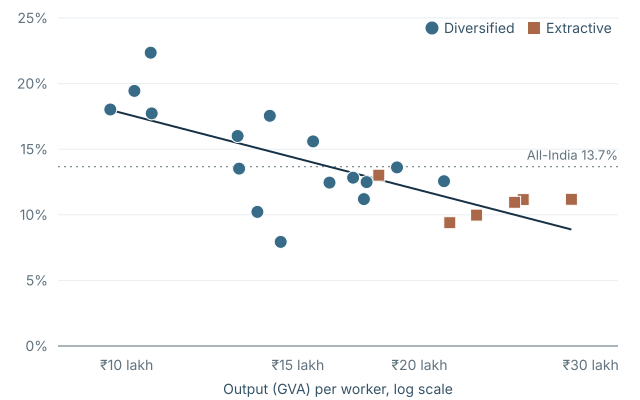

Share of people below $3.00 a day in six of Kenya’s 47 counties, 2022.
Policy Diagnostics Studio
Open subnational evidence for 217 economies: where poverty is, whether spending follows need, and how funding rules would divide a budget.
Research Coordinator, Firms Initiative · International Growth Centre at LSE
How can firm growth create better jobs and broader prosperity?
I am a research portfolio lead at the International Growth Centre. I work on firms, labour markets and the institutions that shape who benefits from growth.
Why rapid productivity growth in India’s registered manufacturing sector has not translated proportionately into labour’s share of value added.

With Zeynep Bayram
What helps enterprises invest, learn, export and connect to larger value chains?
When productivity rises, how much reaches workers through pay, employment and opportunity?
Which rules, financing arrangements and administrative systems turn economic policy into results?
Share of people below $3.00 a day in six of Kenya’s 47 counties, 2022.
Open subnational evidence for 217 economies: where poverty is, whether spending follows need, and how funding rules would divide a budget.
Labour-income share of Indian manufacturing value added, RBI KLEMS.
How much of value added reaches labour, across India and international comparators.
Modelled emissions embodied in purchased inputs, one of 3,926 buyer cases.
Trace supplier exposure and how hypothetical transition costs move between buyers and suppliers.
Severe contractions per 100 observations, by risk tier, out-of-time test.
A calibrated screen for country–industry pairs at elevated risk of severe employment contraction.
Poverty gap after a maize price rise, by rule, central scenario.
How a fixed budget protects Malawian households from a maize price rise, under stated uncertainty.
I combine quantitative analysis with the less visible work that makes evidence useful: sourcing and documenting data, testing claims, managing delivery, convening researchers and practitioners, and presenting limitations clearly.
Research partnerships with academic teams, donors and development finance institutions, alongside public tools built in R, Python and JavaScript.